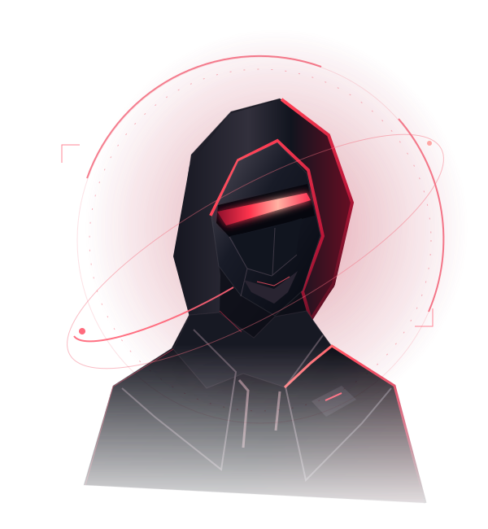

Open to Cybersecurity Opportunities
MOHAMMED
CYBERSECURITY / RESEARCH / ENGINEERING
MOHAMMED
SUHAIL C S
I build systems.
Then challenge their security.
Dubai, United Arab Emirates

SECURITY BY UNDERSTANDING
Curiosity into capability.APPLICATIONS + INFRASTRUCTURE
PORTRAIT / REAL PERSON, REAL WORK
01 SELECTED WORK
Research into
real work.
Real work across security, research, servers, networks and engineering. Every card opens a dedicated case-study page.
Client-sensitive work is documented at a general level. Tool reports are synthetic; prototypes are not client-deployed products.
PROFILE / 001
DUBAI, UAE
Curiosity is the starting point.
Understanding is the outcome.
OFFENSIVE MINDSETDEFENSIVE PURPOSE
03 AREAS OF PRACTICE
Built on
understanding.
Connecting assessment, research and engineering to see the whole system.
Tools I work with.
Grouped by use. No arbitrary skill percentages.
04 EXPERIENCE
Progress through
practice.
CAREER JOURNEY
CONTINUOUS DEVELOPMENT
Credentials & education.
CHOOSE YOUR CHANNEL
Say hello. Let's connect.
Open a draft in your browser or visit my professional profile. No form submissions or personal data are collected by this site.